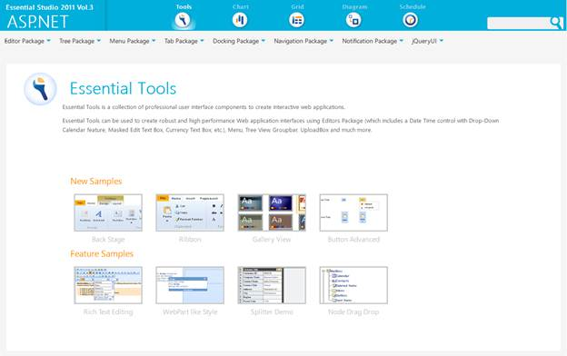
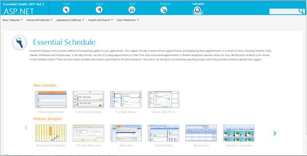

Viewing Samples
To view the samples:
1. Click Dashboard. The Essential Studio Enterprise Edition window is displayed.
2. Click the Run Locally Installed Samples link. The Essential Studio ASP.NET Edition sample browser is displayed.

Figure 113: ASP.NET Edition Sample Browser
3. Select Schedule from the drop-down.

Figure 114: ASP.NET Schedule Sample browser
4. Select any sample from Icon Customization under the Appearance Setting tab and browse through the features.